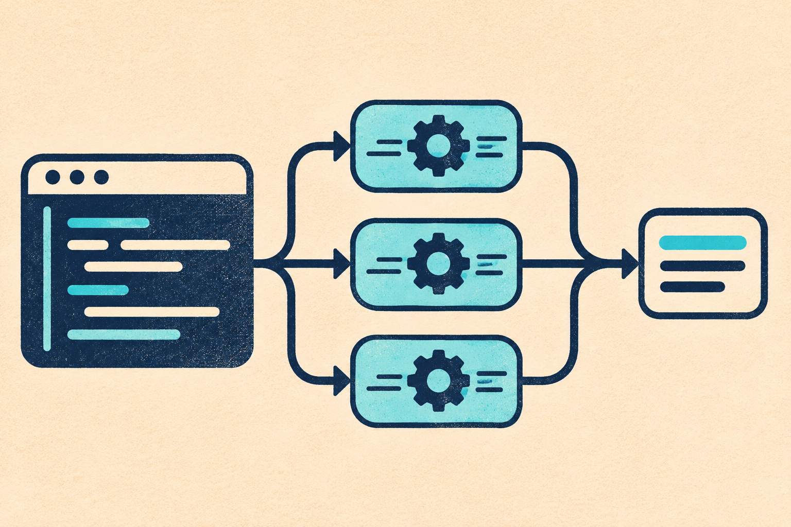

GARDER L’ESSENTIEL SOUS LA MAIN
Go, en mémo.
Des idées simples, des outils solides : les repères pour écrire et relire du Go.
Aller aux commandes ↓
01 / L’ESPRIT
Explicite avant ingénieux.
- Privilégiez un code lisible et des noms clairs ; laissez
gofmtrégler la mise en forme. - Commencez par la bibliothèque standard. Ajoutez une dépendance pour un besoin réel.
- Les erreurs sont des valeurs : traitez-les ou ajoutez du contexte avant de les transmettre.
02 / LES VALEURS
Comprendre ce qui se copie.
- Une affectation copie la valeur ; une slice copiée peut partager son tableau sous-jacent. Réaffectez le résultat de
append. - Un type satisfait implicitement une interface par ses méthodes. Une interface contenant un pointeur nil typé n’est pas nil.
deferappelle à la sortie de la fonction, dans l’ordre inverse ; ses arguments sont évalués immédiatement.
03 / CONCURRENCE
Prévoir la fin.
- Une goroutine permet la concurrence, pas une accélération garantie.
- Canal ou mutex : choisissez selon la propriété des données. Pour chaque goroutine, prévoyez attente et annulation.
contexttransmet annulation et échéance aux opérations qui l’observent.
04 / AUX FRONTIÈRES
Rendre les risques visibles.
- Enveloppez avec
%wseulement si exposer l’erreur sous-jacente fait partie du contrat ; utilisezerrors.Isouerrors.As. - En réseau, fixez des délais, limitez les entrées et fermez les corps de réponse.
- Le détecteur de races observe uniquement les chemins exécutés ; un test vert ne prouve pas l’absence de défauts.
05 / LA BOUCLE
Quelques commandes à portée de main.
Dans un module Go de confiance. Les tests exécutent du code ; go test -race nécessite une plateforme prise en charge.
go test ./...Tester les packages du module.go test -race ./...Détecter des races sur les chemins exécutés.go vet ./...Signaler certaines constructions suspectes.go build ./...Compiler les packages.POUR ALLER PLUS LOIN
Les sources font foi.
Effective Go · Spécification · Commandes Go · Détecteur de races · context
Effective Go reste utile pour les idiomes de base, mais ne couvre pas les évolutions récentes comme les modules et les génériques.